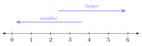

Foundations · Chapter 1
Number Sets
The numbered examples below are interactive: the numbers change every time you load the page. Type your answer, press Enter or Check, and use New numbers to practice again.
Learning algebra is similar to learning a language. You start with a basic vocabulary and then add to it as you go along. Algebra uses numbers and symbols to represent words and ideas, so let’s look at the numbers first.
Counting Numbers and Whole Numbers
The most basic numbers used in algebra are the ones we use to count objects: and so on. These are called the counting numbers (also known as natural numbers). The notation “” is called an ellipsis. It is another way to show “and so on”, meaning the pattern continues endlessly.
Counting Numbers. The counting numbers start with and continue.
The discovery of the number zero was a big step in the history of mathematics. Including zero with the counting numbers gives a new set called the whole numbers.
Whole Numbers. The whole numbers are the counting numbers and zero.
We stopped at when listing the first few numbers. We could write more numbers if they were needed to make the pattern clear.
The Number Line
Counting numbers and whole numbers can be visualized on a number line. Numbers increase from left to right and decrease from right to left.

The point labeled is called the origin. The points are equally spaced to the right of and labeled with the counting numbers. When a number is paired with a point, it is called the coordinate of the point.
Which of the following are (a) counting numbers? (b) whole numbers?
Which of the following are (a) counting numbers? (b) whole numbers?
Which of the following are (a) counting numbers? (b) whole numbers?
Worked-example videos
Adapted from OpenStax Prealgebra, licensed under CC BY 4.0.